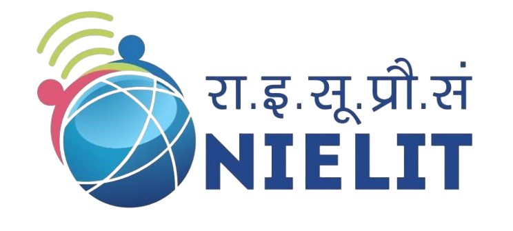
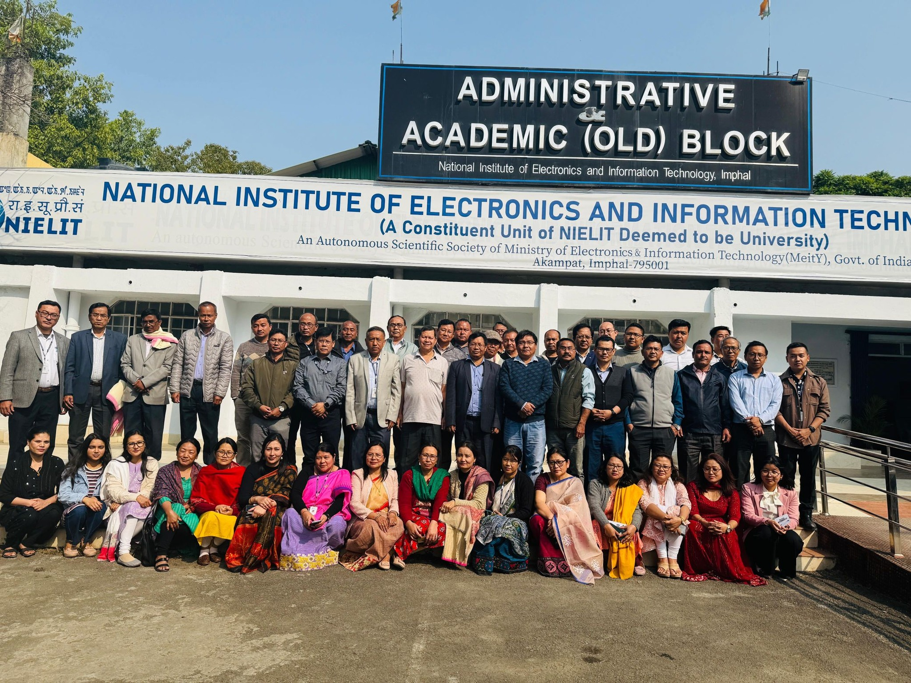
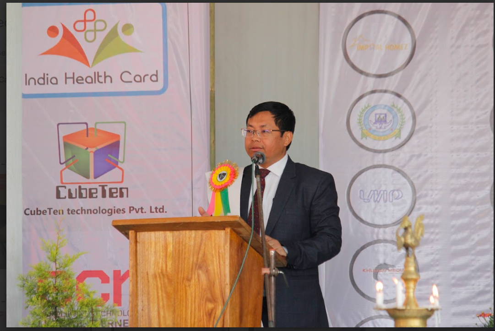

|
NIELIT Imphal is a center
under NIELIT New Delhi, which operates as an autonomous body of the
Ministry of Communications and Information Technology, Government of
India. It focuses on providing industry-oriented education and training,
particularly in Electronics & Communication Engineering and Information
Technology, through various programs.
The National Institute of Electronics and Information Technology (NIELIT) in Imphal, India offers courses in electronics, information technology, and renewable energy. The institute is under the administrative control of the Ministry of Electronics and Information Technology (MeitY) |
 |
| NIELIT Imphal (erstwhile CEDT/CEDTI/DOEACC) became operational in July 1989 with the introduction of Three Years Diploma in Electronics Engineering Course. There are 02 Extension Centres of NIELIT Imphal at Churachandpur & Senapati Districts of Manipur. There are 21 NIELIT Centres & Extension Centres in the North Eastern parts of India (Out of 43 all over India). The Centre is located at Akampat, about 5 kms. in the south-east direction from the heart of the Imphal city. Spread over an area of more than 20 acres, it houses the main Institute Buildings consisting of Administrative wing, Lecture Halls, Faculty Rooms, Computer Labs, Mechanical Workshop and several labs in the field of Information, Electronics & Communication Technology. Besides the main institute building, the campus houses the staff quarters, students’ hostels, electrical substation and other host of essential facilities. | |
|  |
Welcome to NIELIT Imphal,
"The National Institute of Electronics and Information Technology (NIELIT) operates under the administrative control of the Ministry of Electronics and Information Technology (MeitY), Government of India. We empower every corner of our nation and reach out to diverse communities. Our mission is to train many competent professionals, addressing industry demands while supporting transformative initiatives like 'Digital India', 'Skill India', and 'Make in India'. We offer training in both formal and non-formal education at various levels." |
|
Courses offered:
|
Skill development courses:
|
Other features:
|
| Copyright © NIELIT. All Rights Reserved. |